Privacy ladderPebble Audio · Server & Assistants · 390 × 844
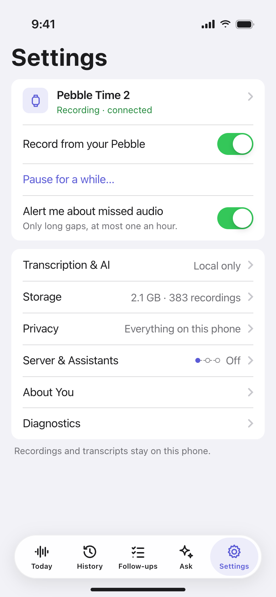
1 · Entry, off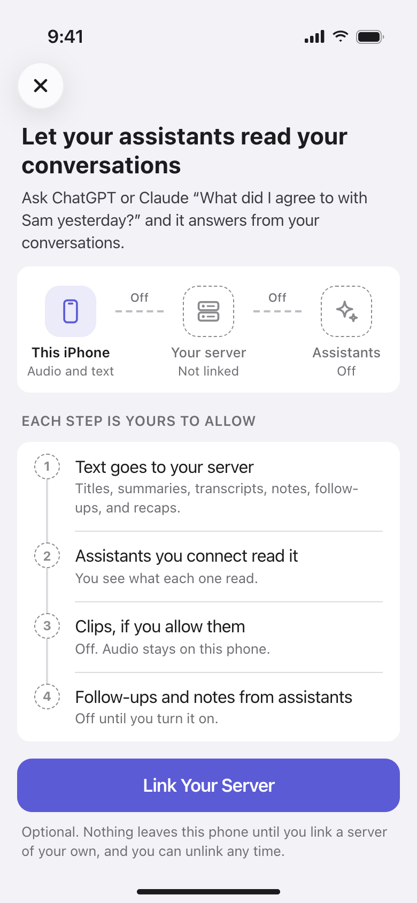
2 · Introduction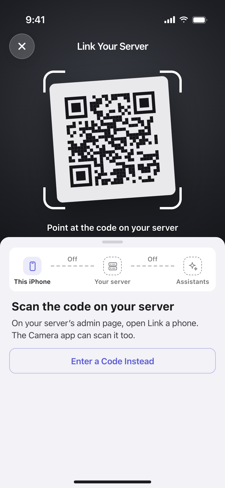
3a · Link: scan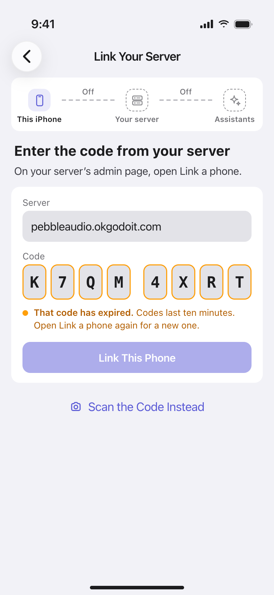
3b · Link: code expired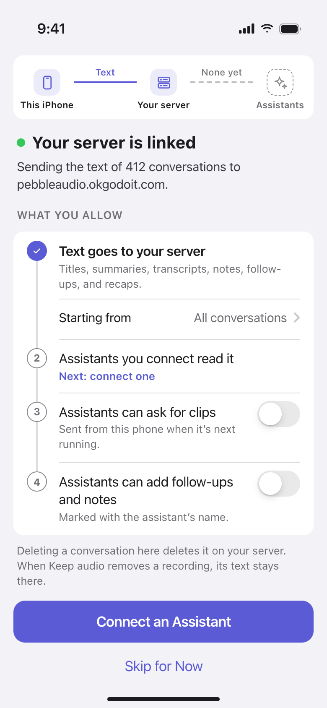
4 · Choices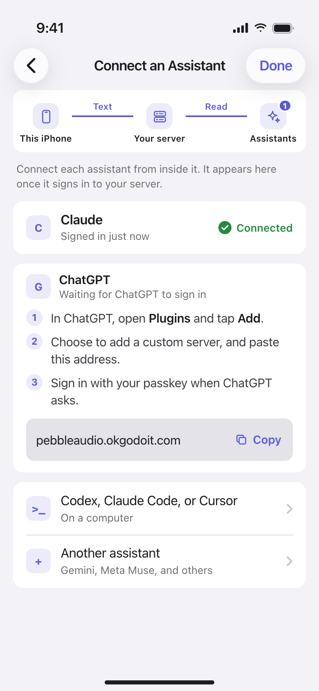
5a · Connect: ChatGPT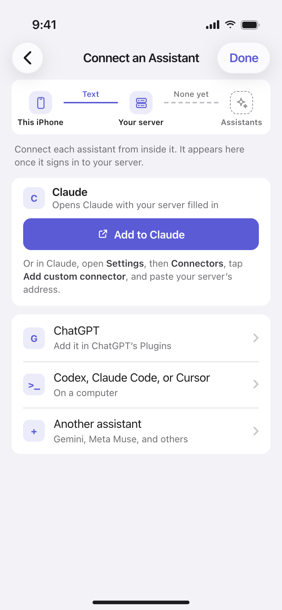
5b · Connect: Claude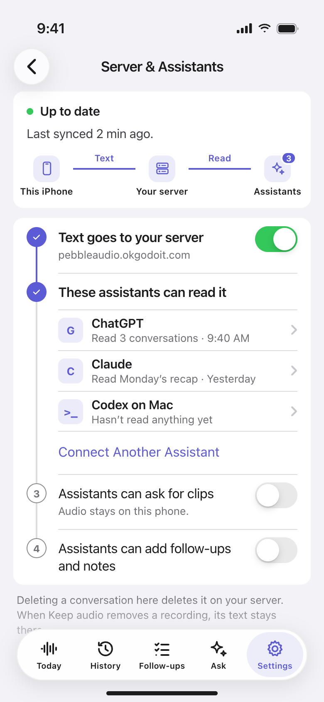
6a · Linked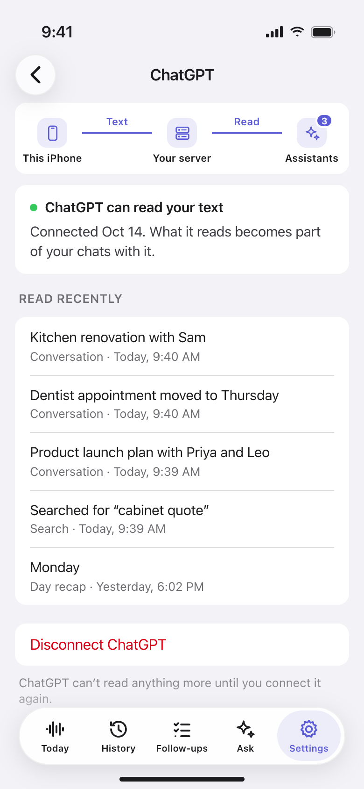
6b · What ChatGPT read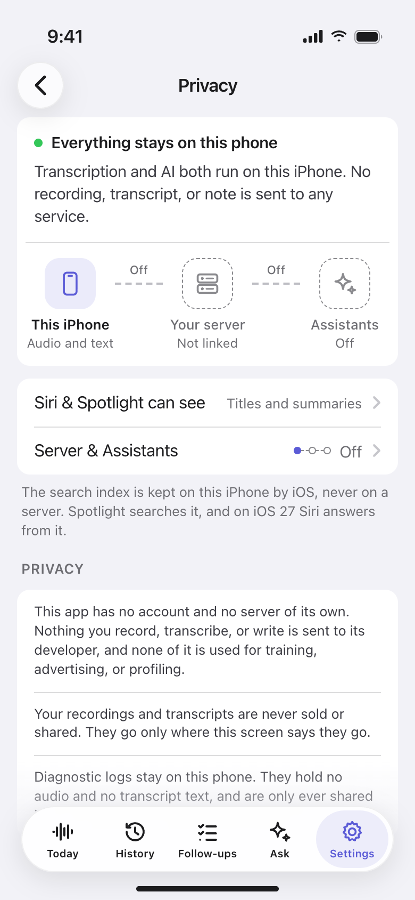
7a · Privacy: on this phone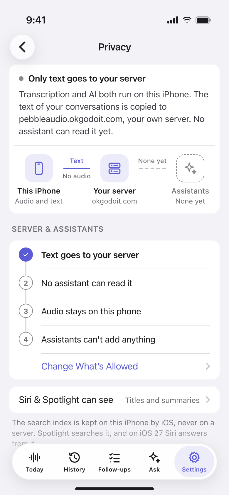
7b · Privacy: text to server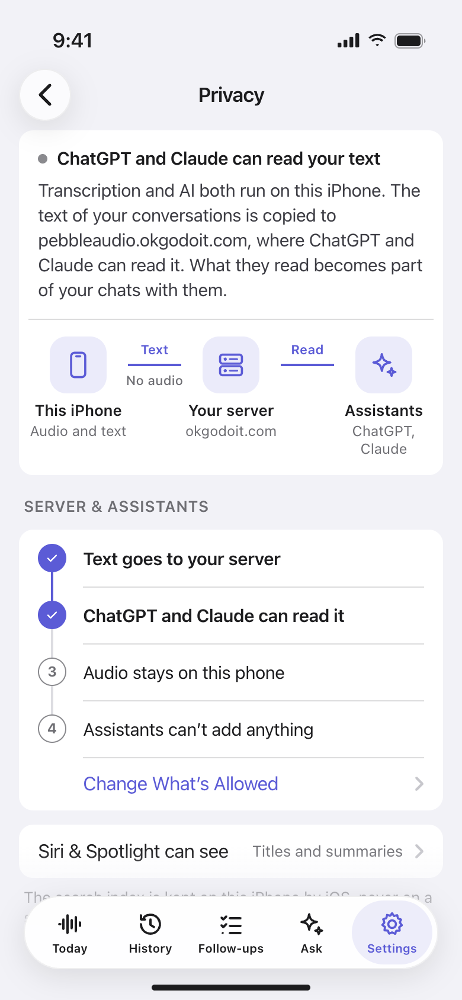
7c · Privacy: assistants read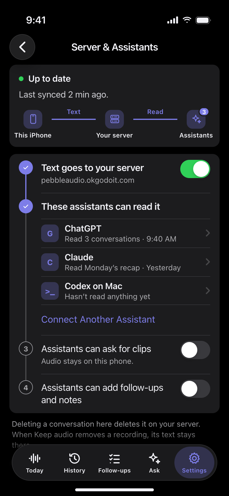
6a · Linked, dark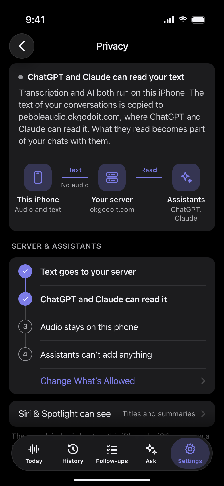
7c · Privacy, dark